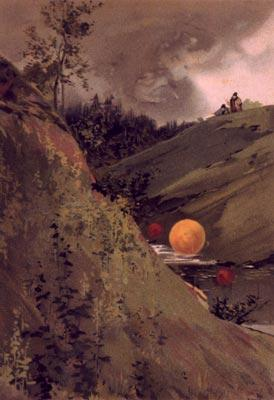

Boules de feu observées par le 30 juillet Figuier, Louis: Année scientifique et industrielle < Peinture d'un artiste inconnu (Imp. Lemercier et Cie, Paris) in Desbaux, Emile: La Physique Populaire, Bibliothèque Camille Flammarion, Paris, 1891, p. 424-425. Domaine public, disponible auprès de l'Agence Martienne et de la Mary Evans Picture Library

À Manti, observation d'une croix dorée sur la face de la
Lune "A Cross Moon", Ogden Standard Examiner, 1888-03-31.
En Nouvelle-Zélande, observation d'un objet à noyau ovale
avec des flammes à bandes noires suggestives d'une structure Nature, 42-402.
A Findlay (Ohio), des centaines de gens observent dans le ciel du nord des lueurs
rougeâtres former une main géante "A Strange Spectacle", Patriot de Barnstable (Massachusetts), 1888-05-29.
A New York, observation d'une boule de feu émettant
beaucoup d'étincelles et explosant "A Mysterious Ball of Fire", Sentinel de Milwaukee (Wisconsin), 28 juin 1888.
A Vladicaucase, près de Saint Pétersbourg (Russie), M. Agé observe des 3 boules brillantes : une grande
jaunâtre, ayant l'éclat de l'or, et 2 petites boules pourprées, sur les côtés de la grande. Les pentes du ravin
étaient éclairées d'une lumière pourprée. Environ 3 mn après, les boules deviennent plus petites, et
disparaissent instantanément, sans aucun bruit Figuier, Louis: L'Année scientifique et industrielle, 32ème année (1888), Paris, 1889, pp. 66-67.
Au Cap de Bonne Espérance, pluie si noire
qu'elle est décrite comme une douche d'encre. On la décrit comme constituée de particules volcaniques et
cosmiquesLa Nature, 1888, 2-406 < The Complete Books of Charles Fort. New York: Dover, 1974, p. 29 < Fitch, Donna K., Strange: August Fortean EventsAlmanach Hachette 1902.
Le lac Long est labourée par une boule de feu de taille considérable "Plowed by Fire", Semi Weekly, 1888-10-09.